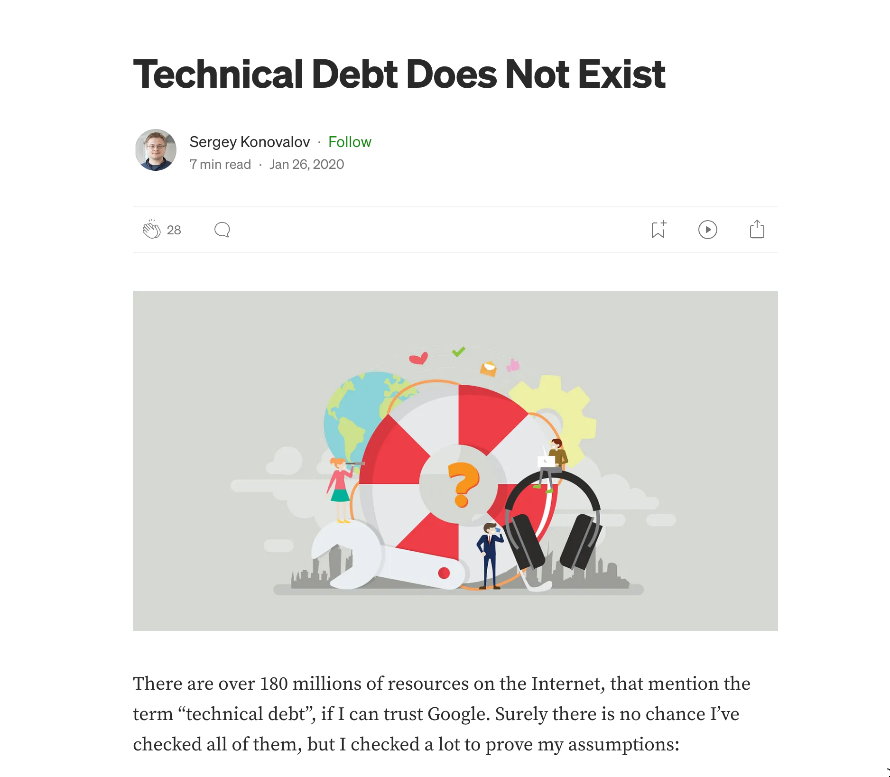

Как отдать технический долг
Как отдать технический долг
- Никита Сидоров (Яндекс Маркет)
- Алексей Золотых (МойОфис)
- Семен Левенсон (Яндекс Маркет)

Тяжелое утро c HolyJS

План
- Что такое технический долг
- Где встречается
- Какой бывает
- Есть мнение что его не бывает
- Способы борьбы
- Полезняшки
Онтология технического долга
- Architecture Debt
- Build Debt
- Code Debt
- Defect Debt
- Design Debt
- Documentation Debt
- Infrastructure Debt
- People Debt
- Process Debt
- Requirement Debt
- Service Debt
- Test Automation Debt
- Test Debt
Какой?
Осмысленный vs Бездумный
Известный или неизвестный
Есть и такое мнение
Как бороться?
ASA
Что ищем?
- Code style
- Антипаттерны
- CodeSmells
- Ошибки безопасности
- DRY
Awesome ASA
github.com/analysis-tools-dev/static-analysisМетрики кода
Low Coupling (низкая связанность) и High Cohesion (высокое зацепление)
1. Идеальная ситуация

2. Все в одном

3. Неправильные границы

4. Мастер SOLID

Что мерить и как оценивать?
- Cyclomatic and Cognitive complexity
- Кол-во импортов
- Кол-во строк
- Покрытие тестами
Code Churn
- Стоит ли?
- Какие выводы делать?
Структурный поиск
semgrep.devAngular 1.*
rules:
- id: legacy_metrics.angular_modules
pattern-regex: angular(?:(?:\n\s*)|)\.module|ngInject
message: Angular module was found
languages:
- javascript
- typescript
severity: WARNING
Grafana + Clickhouse
5. Полезняшки
Sonarqube Community Branch Plugin
https://github.com/mc1arke/sonarqube-community-branch-plugin
version: "3.8"
services:
sonarqube:
depends_on:
- db
image: mc1arke/sonarqube-with-community-branch-plugin:${SONARQUBE_VERSION}
build:
context: .
dockerfile: ${DOCKERFILE}
args:
SONARQUBE_VERSION: ${SONARQUBE_VERSION}
PLUGIN_VERSION: ${PLUGIN_VERSION}
container_name: sonarqube
ports:
- 9000:9000
networks:
- sonarnet
environment:
- SONAR_JDBC_URL=jdbc:postgresql://db:5432/sonar
- SONAR_JDBC_USERNAME=sonar
- SONAR_JDBC_PASSWORD=sonar
volumes:
- sonarqube_conf:/opt/sonarqube/conf
- sonarqube_data:/opt/sonarqube/data
db:
image: postgres:11
container_name: postgres
networks:
- sonarnet
environment:
- POSTGRES_USER=sonar
- POSTGRES_PASSWORD=sonar
volumes:
- postgresql:/var/lib/postgresql
- postgresql_data:/var/lib/postgresql/data
volumes:
sonarqube_conf:
sonarqube_data:
postgresql:
postgresql_data:
networks:
sonarnet:
Бас фактор
github.com/onigoetz/absorption
absorption /Users/onigoetz/Sites/Libs/crafty --weights weights.json --contributors contributors.json
Scanning ████████████████████████████████████████ | 100% | 492/492 files
The repository's absorption score is 16% fresh, 84% fading and 0% lost
Fresh/Fading knowledge
Name │ Total │ Fresh │ Fading
────────────────────┼──────────┼──────────┼──────────
Stéphane Goetz │ 99.51 % │ 15.67 % │ 83.83 %
Vitalii Shapovalov │ 0.14 % │ 0.14 % │ 0.00 %
Работаем с JSON

Другие тулы для структурного поиска